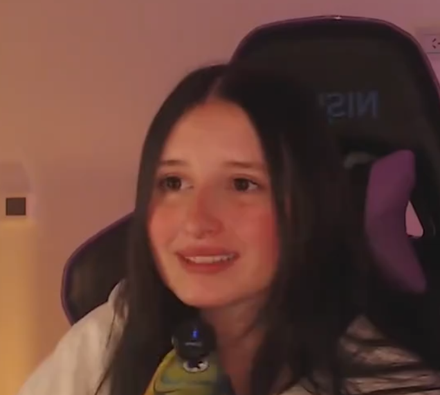
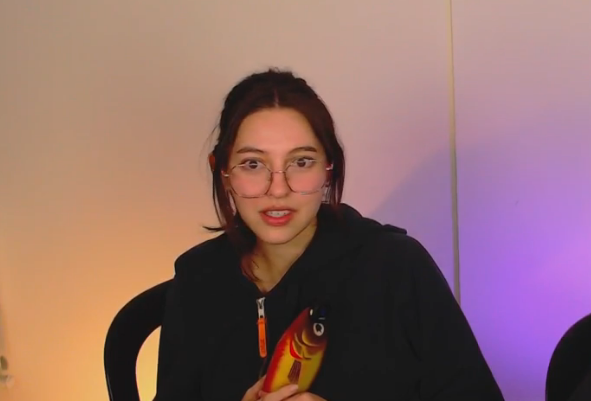

Dosis de Mierda

| Creadores | Malena y Victoria |
|---|
| Fecha de creación | 27 de junio de 2025 |
|---|
| Plataforma | Kick |
|---|
| Tipo | Canal de transmisiones en vivo |
|---|
| País | Argentina |
|---|
| Ciudad | Rosario |
|---|
| Seguidores | Aproximadamente 1,000 |
|---|
Dosis de Mierda
Dosis de Mierda es un canal de la plataforma Kick, iniciado el 27 de junio de 2025 en Rosario, Argentina. El proyecto fue creado con la idea original de leer historias publicadas en Wattpad, con énfasis en contenidos relacionados con streamers argentinos.
Inicios
El canal comenzó como un espacio dedicado a la lectura y comentario de historias de Wattpad. Su primer acercamiento relevante a la fama ocurrió cuando streamers reconocidos como Moski, Bauletti y Mernuel reaccionaron a uno de sus clips, en el que participaban en el juego «besar, casar y matar».
Tras este episodio, las creadoras decidieron abandonar la idea original del canal debido al riesgo de que otros streamers reaccionaran a su contenido y a las posibles consecuencias que esto podría traer.
Contenido y polémica
Con el tiempo, el canal se volvió conocido por su contenido polémico y subido de tono, lo que generó fuertes críticas, principalmente por parte del colectivo feminista.
Algunos clips difundidos por medios argentinos incluyen declaraciones controvertidas, como cuando Malena afirmó que una mujer que no recibió un golpe en la cara «no sale derecha», lo que incrementó la exposición y la controversia alrededor del canal.
Actualidad
Actualmente, Dosis de Mierda ha alcanzado aproximadamente 1,000 seguidores en Kick. Este crecimiento se atribuye a su constancia semanal, la innovación en su formato y la notoriedad generada por sus conversaciones polémicas.
Para algunos seguidores, el canal representa un espacio con «valores correctos» y una comunidad afín, mientras que para otros es un contenido criticable, lo que ha contribuido tanto a su mala fama como a su visibilidad.
Redes y comunidad
El canal cuenta con presencia en diversas plataformas:
- Instagram
- YouTube
- Kick
- TikTok
- Servidor de Discord, utilizado para anunciar streams, publicaciones y como espacio de convivencia comunitaria
Chat
El chat esta lleno de gigachads con miembros gigantes los cuales son el centro del canal ademas de Sandía y Ale.
Malena

| Nombre completo | Malena |
|---|
| Nacimiento | Rosario, Argentina |
|---|
| Ocupación | Streamer |
|---|
| Formación | Producción audiovisual |
|---|
| Proyecto | Dosis de Mierda |
|---|
Malena
Malena es una de las creadoras del canal Dosis de Mierda y una figura surgida del contexto social en el que creció. Nació en Rosario, Argentina, en un entorno socioeconómico humilde, donde la meritocracia era percibida más como un mito que como una posibilidad real. La inseguridad y la precariedad formaban parte de la vida cotidiana, integradas al paisaje urbano y social.
Contexto y primeros años
Desde muy pequeña comprendió que el esfuerzo no siempre garantiza resultados, aunque la falta de esfuerzo suele garantizar consecuencias negativas. Creció rodeada de trabajos mal remunerados, horarios extensos y una sensación constante de inestabilidad, lo que contribuyó a forjar una visión crítica sobre el funcionamiento del sistema laboral y social.
Inicios en el streaming
Cansada de la precariedad laboral, decidió incursionar en el streaming a través de la plataforma Twitch. Esta decisión combinó expectativas de progreso con una apuesta arriesgada al crecimiento digital. Contra los pronósticos iniciales, logró cierto reconocimiento local, convirtiéndose en una figura identificable dentro de su ciudad.
Formación y proyectos audiovisuales
Con el objetivo de legitimar su actividad y ampliar sus oportunidades profesionales, estudió realización y producción audiovisual. Durante este período surgieron rumores persistentes sobre un posible interés en la industria del cine pornográfico, los cuales no se materializaron en proyectos concretos ni tuvieron consecuencias documentadas.
Tras finalizar sus estudios, intentó insertarse en la industria audiovisual sin éxito, enfrentándose a reiterados rechazos, procesos inconclusos y promesas laborales que no se concretaron. Esta experiencia reforzó su percepción crítica sobre las dinámicas del mercado laboral.
Dosis de Mierda
Finalmente, junto a Victoria, creó el canal Dosis de Mierda, concebido como un espacio de expresión directa y sin filtros. El proyecto se caracteriza por un enfoque irónico y frontal, surgido de la frustración social y de la necesidad de verbalizar ideas habitualmente relegadas al ámbito privado.
Para Malena, el canal no representa una evasión de la realidad, sino una forma de afrontarla desde la exposición pública, prescindiendo de la corrección política y priorizando la espontaneidad como rasgo central de su identidad digital.
Victoria

| Nombre completo | Victoria |
|---|
| Nacimiento | Rosario, Argentina |
|---|
| Ocupación | Streamer |
|---|
| Formación | Producción audiovisual |
|---|
| Proyecto | Dosis de Mierda |
|---|
Victoria
Victoria es una de las creadoras del canal Dosis de Mierda y una figura surgida del mismo contexto social que su compañera Malena. Nació en Rosario, Argentina, en un entorno socioeconómico humilde, donde la adaptación temprana y la aceptación de oportunidades limitadas formaban parte del proceso de crecimiento.
Contexto y primeros años
Criada en un ambiente marcado por la precariedad económica, comprendió desde joven que la inactividad no era una opción viable. A diferencia de Malena, que apostó por un objetivo específico, Victoria optó por una estrategia pragmática orientada a la supervivencia: trabajar en cualquier empleo disponible, sin una vocación definida más allá de la estabilidad inmediata.
Trayectoria laboral
A lo largo de los años desempeñó múltiples trabajos, algunos breves y otros lo suficientemente prolongados como para dejar una huella significativa. Entre ellos se incluyen empleos en McDonald’s, donde ocupó el puesto de limpieza de sanitarios; para el Gobierno de Argentina como jardinera; y en el Club Atlético Talleres como asistente de limpieza. Estas experiencias consolidaron una trayectoria laboral marcada por tareas de mantenimiento y servicios generales.
Intentos en el streaming
De manera paralela, intentó desarrollarse como streamer en la plataforma Twitch, siguiendo un recorrido similar al de Malena. Sin embargo, esta etapa no logró generar un impacto significativo ni un crecimiento sostenido de audiencia, lo que contribuyó a una visión escéptica sobre la relación entre esfuerzo digital y resultados visibles.
Formación audiovisual
Posteriormente decidió estudiar realización y producción audiovisual junto a Malena, con el objetivo de profesionalizar su experiencia acumulada. Logró graduarse, demostrando constancia y disciplina, aunque no consiguió insertarse laboralmente en el sector audiovisual ni cinematográfico tras finalizar sus estudios.
Dosis de Mierda
Tras reiterados intentos fallidos en distintas industrias, Victoria optó por crear un proyecto propio. Junto a Malena fundó Dosis de Mierda, un canal concebido como síntesis de años de trabajos precarios, frustraciones laborales y observación constante de las dinámicas sociales.
Dentro del proyecto, Victoria desempeña un rol más sobrio y funcional, actuando como contrapunto al estilo más expresivo de su compañera. Su participación se caracteriza por una actitud observadora y pragmática, sin búsqueda de protagonismo ni redención personal.
Para Victoria, Dosis de Mierda no representa un escape ni una catarsis, sino una consecuencia lógica de su trayectoria vital, donde la experiencia acumulada encuentra finalmente un espacio de expresión directa y sin adornos.